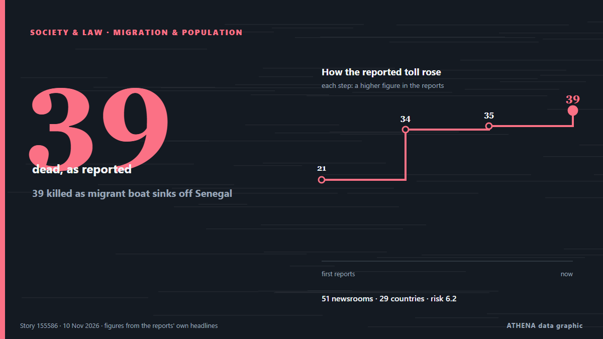

Afrique subsaharienne
Afrique subsaharienne : les derniers événements pays par pays, avec risque, sources et pays selon ATHENA.

Accidents et urgences39 killed as migrant boat sinks off Senegal
Greek coast guards rescued 28 migrants and found the body of a man on a boat in distress near Crete. de Arab News
4 rescued on third day after Kenya building collapse as families lose hope
The number of people rescued from a collapsed building in Kenya has risen to four, while several others remain missing and are reported to have communicated with loved ones from beneath the rubble. de ABC News (International)
17 killed in two mass shootings in South Africa
Roughly 60 people are killed in South Africa on average a day, according to police statistics. de The Straits Times
Somalia accuses UAE of ‘invasion’, expels ambassador
Somalia has ordered the United Arab Emirates (UAE) ambassador to leave the country within 72 hours and recalled its own envoy from Abu Dhabi, escalating a diplomatic dispute between the… de Barbados Today
Kagame Recieves New South African Envoy To Rwanda
Rwanda and South Africa have taken another step towards normalising relations after President Paul Kagame received the credentials of South Africa’s new High Commissioner to Rwanda, Tinyiko George… de KT Press
Attacks kill at least 60 Orthodox Christians in Ethiopia, church says
The Ethiopian Orthodox Church reports that two attacks in Oromia have killed at least 60 Orthodox Christians. de ABC News (International)
Somali Pirates Hijack Iranian Dhow, Marking Fourth Off Somalia in 2026
On October 29, 2026, a Somali Pirate Action Group of 12 armed pirates hijacked the Iranian fishing dhow AZINI approximately 185 nautical miles east of Bandarbeyla, Puntland. de MarineLink